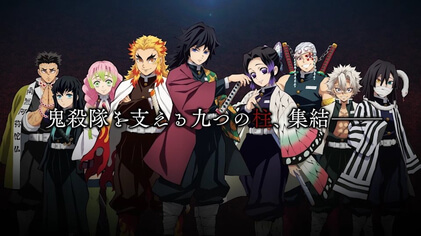

柱
-
鬼殺隊中作為實力最強者的稱號，是組織的「柱石」，最高等級的劍士。這代共有「水」、「蟲」、「炎」、「音」、「霞」、「戀」、「蛇」、「風」、「岩」9位流派劍士。而成為「柱」的條件是打敗一位十二鬼月或累積消滅50隻鬼以上。雖然是實質上的鬼殺隊最高戰力，但平均實力與上弦相比仍是力有未逮，過去百年更有許多柱級劍士被「上弦」殺害。不過，此世代的柱陸續出現斑紋，並且百年來終於首度擊敗上弦，雖然仍有部分柱級劍士因此陣亡，但象徵此世代擊敗無慘將成為可能，因為與上弦的實力差距逐漸縮小，已然不存在相剋一說。